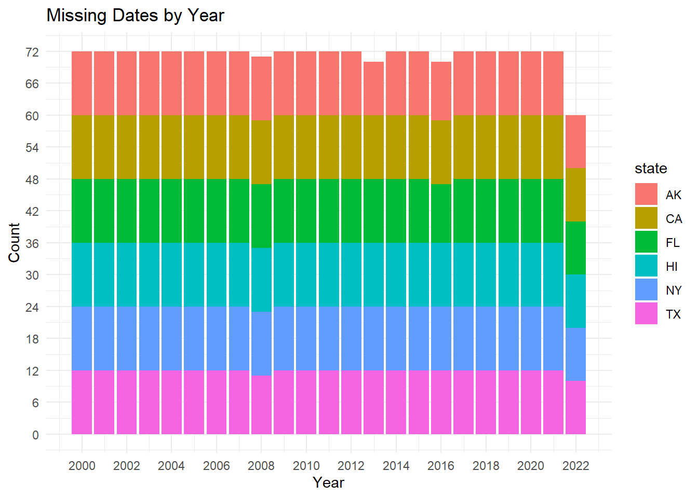

Chapter 3 Data
3.1 Sources
The National Oceanic and Atmospheric Administration (NOAA) gathers information on numerous stations across the United States to monitor tides and currents. The data is collected and recorded through sensors placed on each of the stations. We will be specifically looking at the recorded water levels for 6 different stations in different regions and states throughout the United States; the stations we will be analyzing are The Battery, NY; Virginia Key, Biscayne Bay, FL; Galveston Pier 21, TX; Monterey, CA; Prudhoe Bay, AK; and Honolulu, HI.
We collected water levels for each station from January 2020 - November 2022 on a monthly basis; it is important to note that some stations have data through part of December, which will be removed in the data transformation phase. These collections included all of the possible datums (the base elevation that was used for collection purposes), recorded in feet, but we will specifically be looking at the Mean Tide Level (MTL). Since the data is collected monthly, the time is always 00:00 GMT. By collecting the data on a monthly basis, we will be able to get the best overall long-term view of the data, 22 years.This will also ensure that the data is manageable and not overwhelming, while still being able to view long term trends and seasonality.
Currently, the data has character, number, and integer fields; the only field that will need to be transformed is the date field. Additionally, majority of the states have 274 or 275 records depending on if they have December included, which will be transformed to only view data from November and prior. The only state that has less than 274 records is Alaska, which will be explored further in the missing patterns sections.
3.2 Cleaning / transformation
Overall, the data set was fairly clean and already in a usable state. However, each station had to be downloaded from the NOAA website individually, so we had to bind all of the data sets together to create one manageable data frame. Prior to binding the data frames, we created a new column for the State. Once bound together, the only field that needed to be transformed into the correct data type was the date field; we needed to convert from character to YYYY-MM-DD data format.
## 'data.frame': 1642 obs. of 12 variables:
## $ state : chr "AK" "AK" "AK" "AK" ...
## $ Date : chr "2000/01/01" "2000/02/01" "2000/03/01" "2000/04/01" ...
## $ Time..GMT. : chr "00:00" "00:00" "00:00" "00:00" ...
## $ Highest : num 1.417 1.358 0.889 0.702 1.027 ...
## $ MHHW..ft. : num 0.715 0.771 0.2 0.157 0.623 ...
## $ MHW..ft. : num 0.6 0.689 0.105 0.069 0.515 ...
## $ MSL..ft. : num 0.377 0.449 -0.112 -0.154 0.299 0.771 0.83 0.719 0.883 0.725 ...
## $ MTL..ft. : num 0.367 0.451 -0.13 -0.156 0.295 0.771 0.817 0.643 0.876 0.714 ...
## $ MLW..ft. : num 0.135 0.213 -0.364 -0.381 0.075 0.548 0.561 0.344 0.6 0.443 ...
## $ MLLW..ft. : num 0.059 0.154 -0.42 -0.43 0.01 0.472 0.463 0.203 0.505 0.374 ...
## $ Lowest..ft.: num -0.741 -0.276 -1.299 -0.945 -0.456 ...
## $ Inf. : int 0 0 0 0 0 0 0 0 0 0 ...3.3 Missing value analysis
## Lowest..ft. Highest state Date Time..GMT. MHHW..ft.
## 9 8 0 0 0 0
## MHW..ft. MSL..ft. MTL..ft. MLW..ft. MLLW..ft. Inf.
## 0 0 0 0 0 0Based on above charts, we can see that there are only two variables with missing data points - Lowest Tide and Highest Tide.
Since there are many other datums that we can use for the analysis and to view trends, seasonality, and make comparisons. Therefore, we will choose to omit these two fields from our analysis and use the other datums.
3.3.1 Alaska Missing Values

Since Alaska was the only state that did not have 274 observations, it was missing 3 values, so we wanted to take a deeper look into what year and months did not have a recorded observations.
Based on the first chart, we can see that there are missing values in 2013 and 2016; we are not concerned with seeing only 11 values in 2022 because we do not have that record yet.
To dig into which exact months are missing, we broke the data down further into just 2013 and just 2016. When we did this, we could see that we are missing August 2013, September 2013, and June 2016.